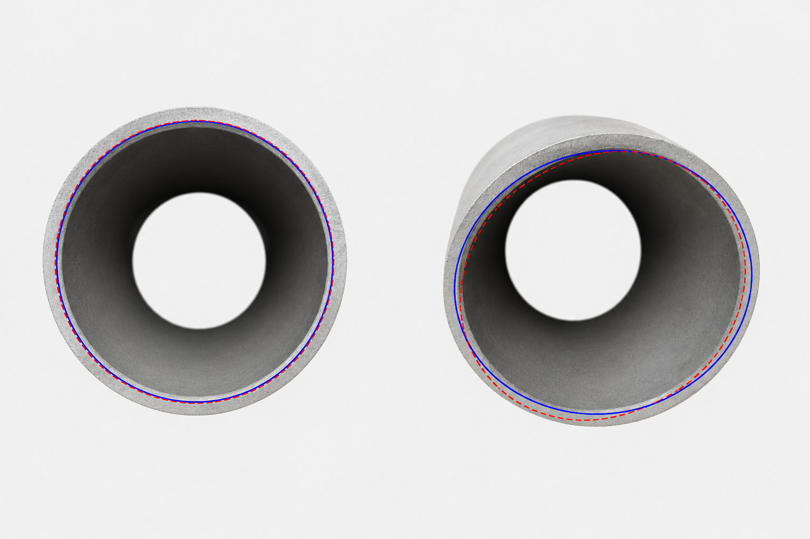
Fixture and Method Validation
Fixture improves repeatability
Pipe centering and angle can still vary
LSC/MCC/MIC threshold not yet defined
Impact: final acceptance needs validated rulesGeometric Foundation
Constant radius. A circle has a constant radius from its center, enabling uniform rotation and even stress distribution.
Maximum area. For a given boundary, a circle encloses the maximum area, making it an efficient and stable design choice.
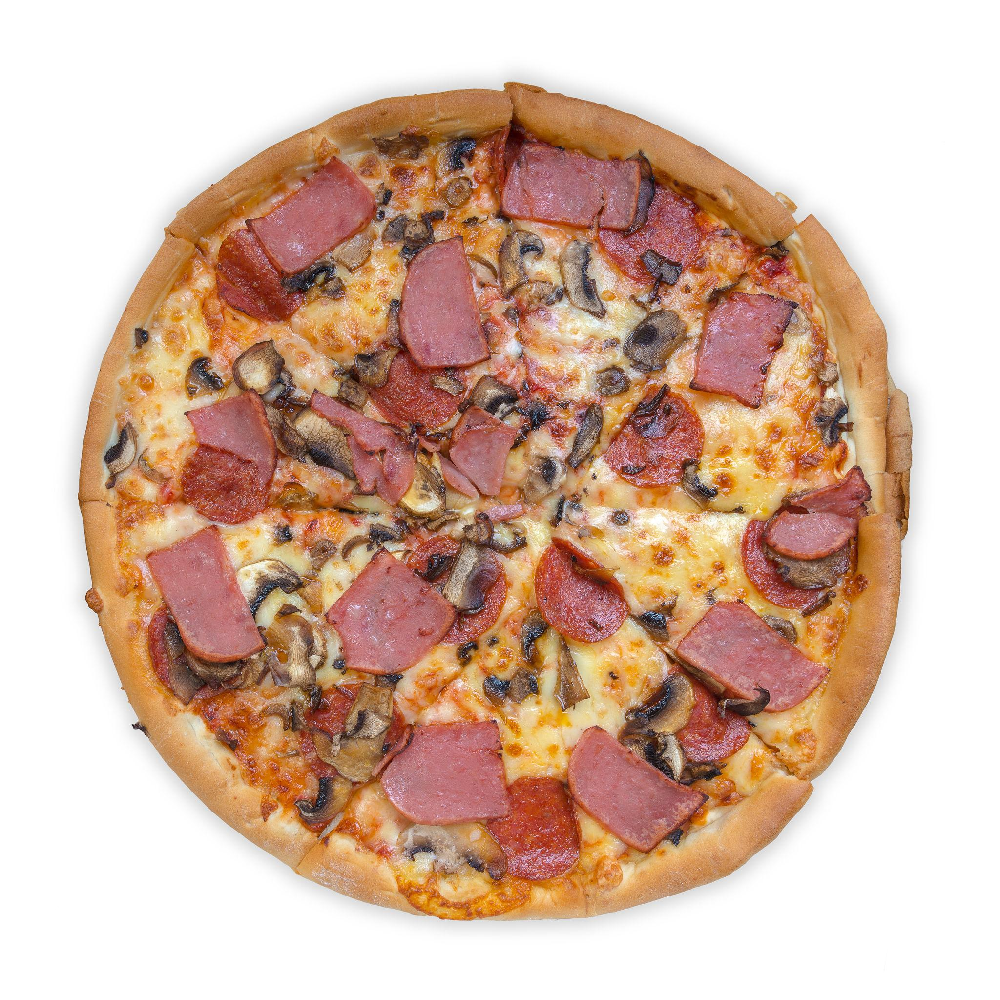
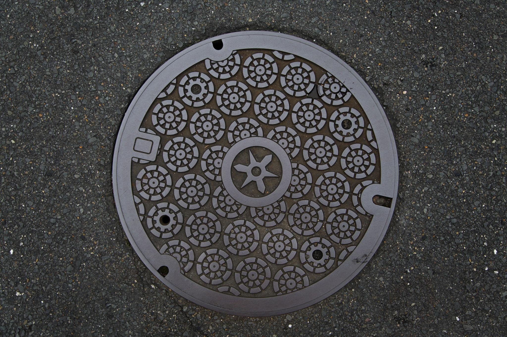
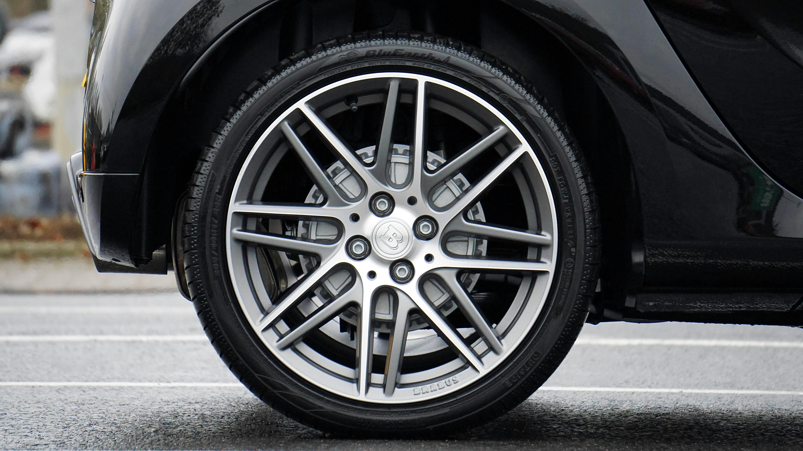
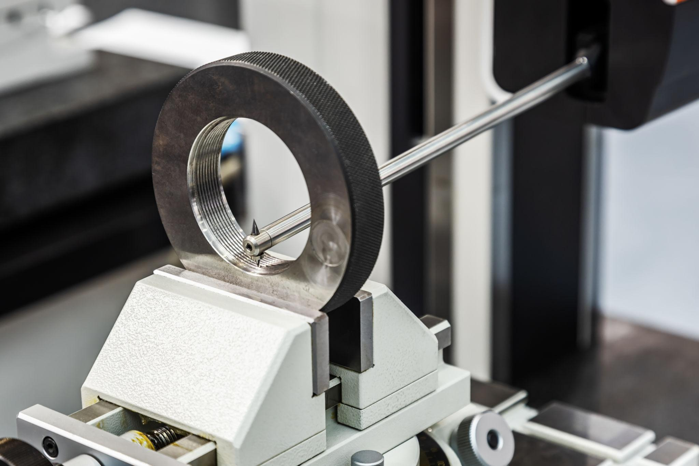
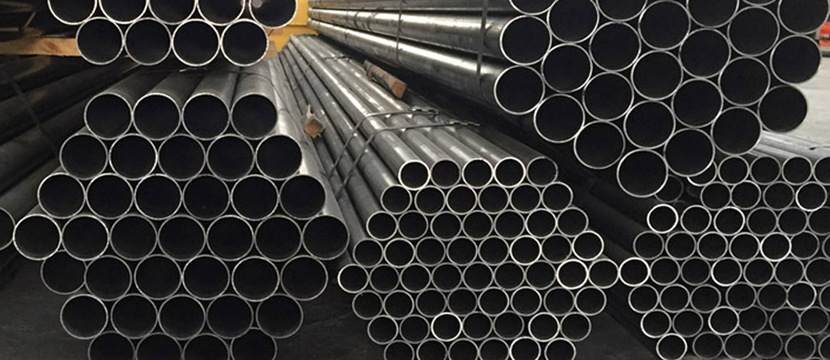
Circular patterns appear across scales, from microscopic structures to large astronomical systems, though rarely as perfect circles.

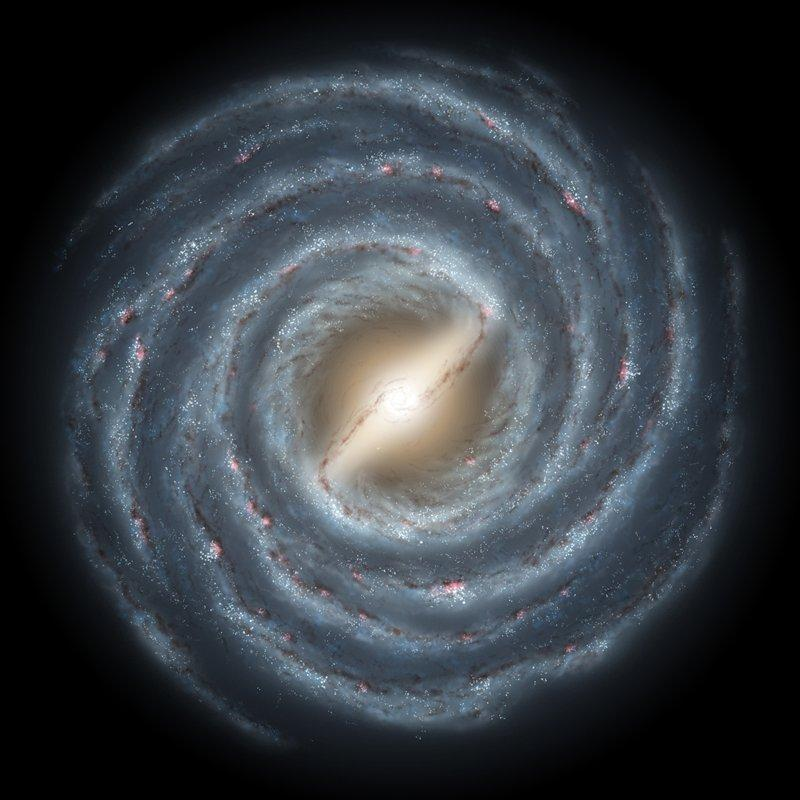
New Approach
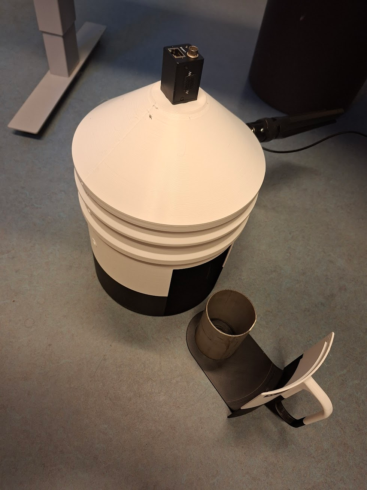
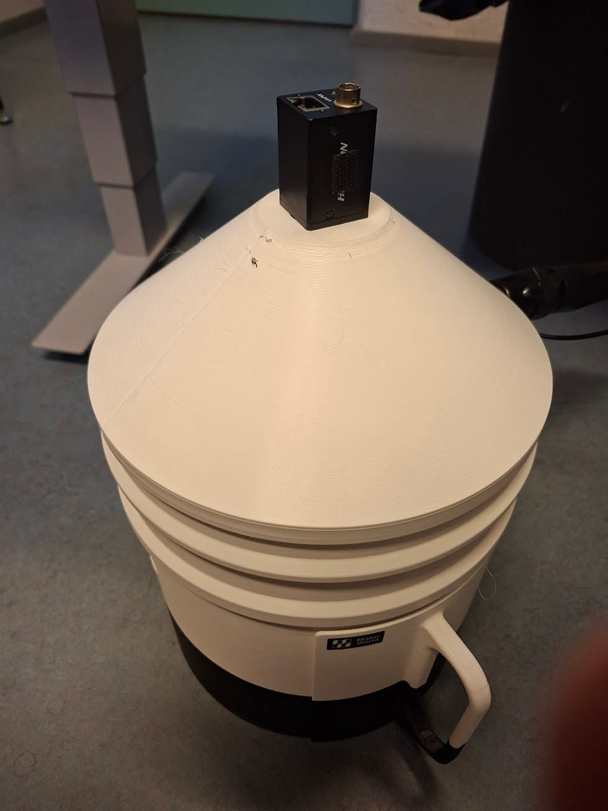

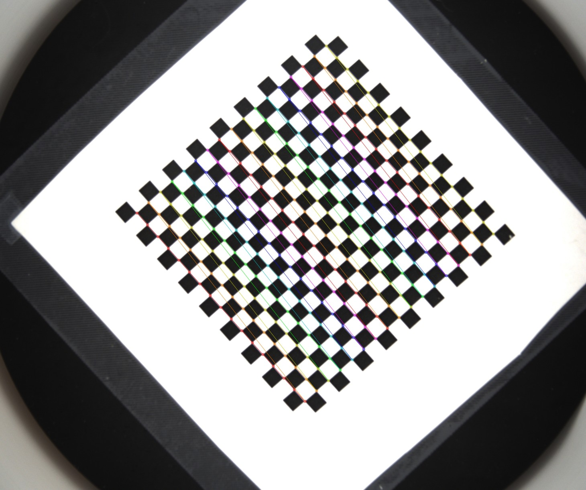
Camera Scale Calibration
Detected checkerboard spacing -> pixel-to-mm scale
Checkerboard reference: each square is 5 x 5 mm.
Practical Constraints

Fixture improves repeatability
Pipe centering and angle can still vary
LSC/MCC/MIC threshold not yet defined
Impact: final acceptance needs validated rules
Lighting and reflections affect edges
Noise can break contour continuity
Impact: unstable fitting and roundness error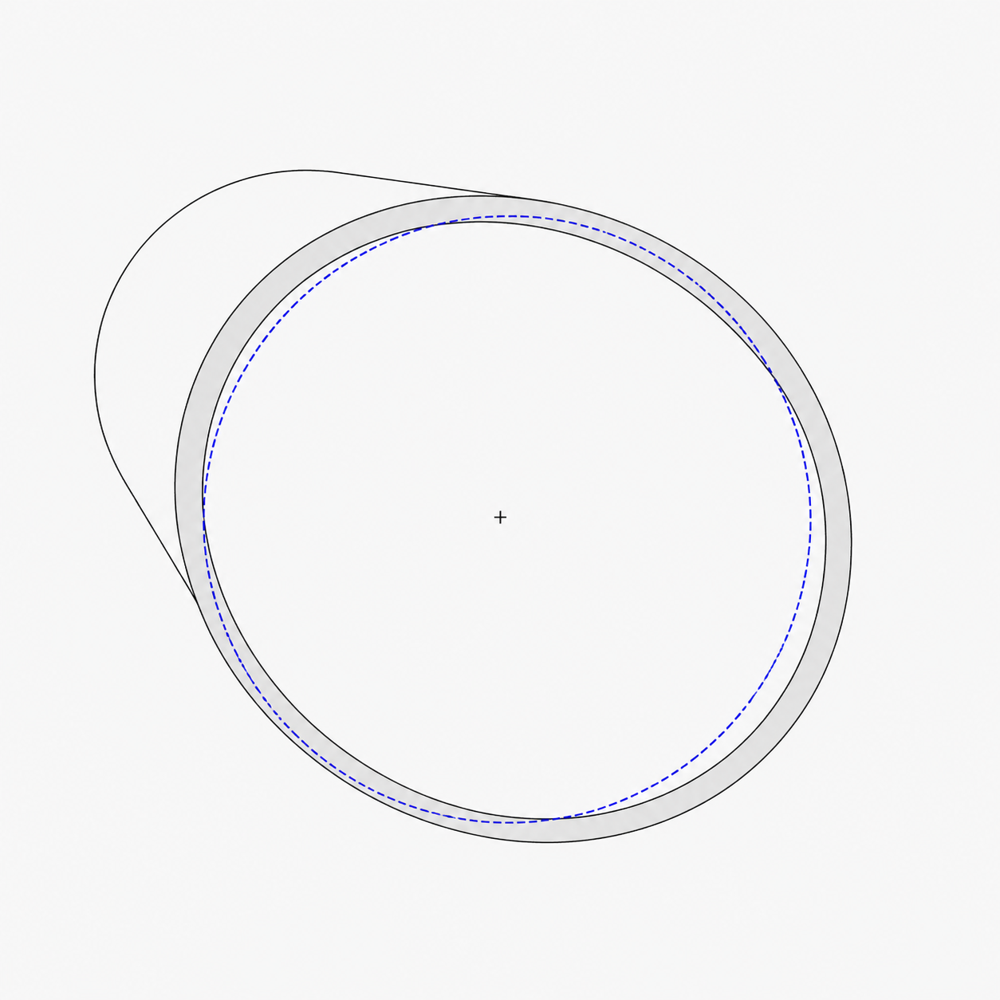
Assumes planar circular cross-section
Tilt and 3D deformation are not fully captured
Impact: incomplete shape representationThe fixture improves repeatability, but inspection confidence still depends on alignment, image quality, and agreed OSTP validation thresholds.
Final Summary

Contour extraction with calibrated pixel-to-mm measurement.
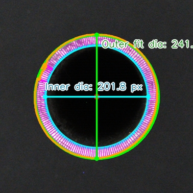
LSC, MCC, MIC, and MZC roundness evaluation.
Standard-based tolerance checks and pass/fail decisions.
Mobile measurement, 3D inspection, and batch lookup for industrial deployment.
An end-to-end system that transforms image-based measurements into standardized, interpretable, and scalable inspection results.